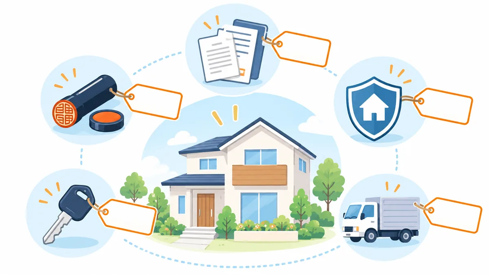

COLUMN
住宅購入の諸費用の内訳と目安。何にいくらかかるか、住宅ローンに含められるか

住宅の購入には、物件価格のほかに「諸費用」がかかります。目安は物件価格の 5〜10% と言われますが、内訳を知らないと計画に穴が開きます。この記事では、諸費用を項目ごとに整理し、目安の金額と、住宅ローンに含められるかどうかをまとめます。今週の親記事 頭金がない場合の住宅購入の資金計画 の関連記事です。
この記事について
- 金額はすべて目安です。物件の種類（新築・中古・戸建て・マンション）、地域、金融機関によって大きく異なります。
- 税金や登記の詳細は、税理士や司法書士にご確認ください。
諸費用の一覧
| 項目 | 内容 | 目安 | 支払う時期 |
|---|---|---|---|
| 仲介手数料 | 不動産会社に支払う（仲介物件の場合） | 物件価格 × 3% ＋ 6 万円 ＋ 消費税が上限 | 契約時と引渡し時 |
| 登記費用 | 所有権の登記、抵当権の設定にかかる税金と司法書士の報酬 | 20〜40 万円程度 | 引渡し時 |
| 住宅ローンの事務手数料 | 金融機関に支払う | 定額（3〜6 万円程度）または借入額 × 2.2% 程度 | お借入れ時 |
| 住宅ローンの保証料 | 保証会社に支払う（手数料型の商品では不要） | 借入額の 2% 前後、または金利に上乗せ | お借入れ時 |
| 火災保険・地震保険 | 加入が必須になることが多い | 10〜30 万円程度（期間・補償による） | 引渡し時 |
| 印紙代 | 売買契約書・ローン契約書に貼る | 数万円 | 契約時 |
| 不動産取得税 | 取得後に一度かかる税金 | 軽減措置でゼロ〜数十万円 | 取得後、数か月〜1 年 |
| 固定資産税の清算 | 引渡し日以降の分を売主に支払う | 数万円〜十数万円 | 引渡し時 |
| 修繕積立基金（新築マンション） | 入居時に一括で支払う | 数十万円 | 引渡し時 |
物件の種類で変わる点
- 新築（売主から直接購入）: 仲介手数料がかからないことが多く、諸費用は物件価格の 3〜6% 程度に収まる例があります。
- 中古（仲介）: 仲介手数料がかかるため、諸費用は 6〜10% 程度になりやすいです。
- マンション: 修繕積立基金や管理費の清算が加わります。
- 戸建て: 水道加入金や地盤・境界の確認費用がかかることがあります。
住宅ローンに含められる諸費用
金融機関によっては、諸費用を住宅ローンに含めて検討できる商品があります（諸費用ローン、または住宅ローンの借入額に上乗せ）。含められる範囲は金融機関ごとに異なり、一般には次のような傾向があります。
- 含められる例が多い: 仲介手数料、登記費用、住宅ローンの手数料・保証料、火災保険料
- 含められる金融機関が限られる: 引越し費用、家具・家電の購入費
- 含められない: 購入後の予備費、不動産取得税
諸費用を含めると借入額が増えるため、返済負担率の計算に影響します。また、住宅の取得以外の部分は住宅ローン控除の対象外となる場合があります。
諸費用を抑える 3 つの視点
- 手数料型と保証料型を比べる。 金融機関によって「事務手数料は高いが保証料なし」「事務手数料は安いが保証料あり」があり、総額で比べると差が出ます。
- 火災保険の補償内容と期間を見直す。 必要な補償に絞ると数万円単位で変わります。
- 登記費用の見積もりを確認する。 司法書士の報酬部分は事務所によって差があります。
計算例: 中古マンション 2,800 万円
- 仲介手数料: 約 100 万円（上限額で計算）
- 登記費用: 約 30 万円
- 住宅ローン手数料（借入額 × 2.2%）: 約 62 万円
- 火災・地震保険: 約 20 万円
- 印紙代・清算金・その他: 約 15 万円
- 合計: 約 227 万円（物件価格の約 8%）
この例では、諸費用を住宅ローンに含められれば、手元資金として必要なのは引越し・家具家電と予備費になります。含められない場合は、諸費用の全額または一部を手元資金から出す必要があります。